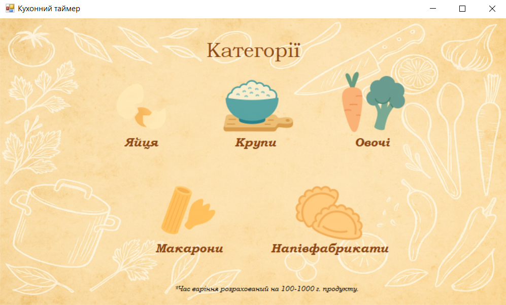
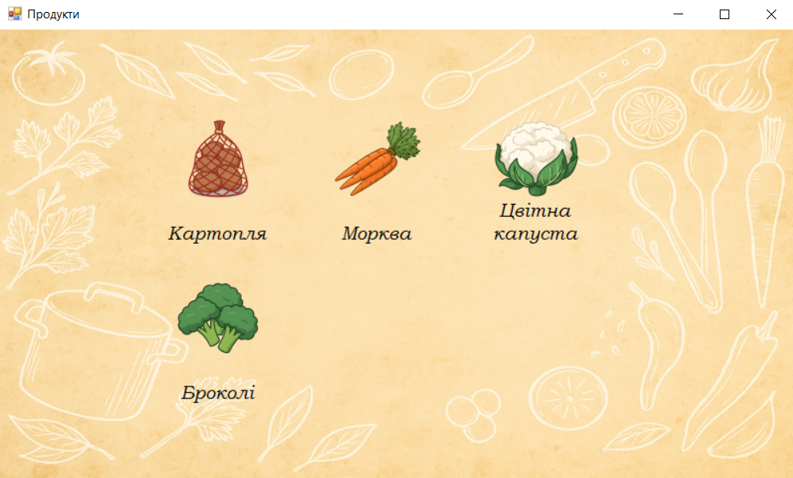
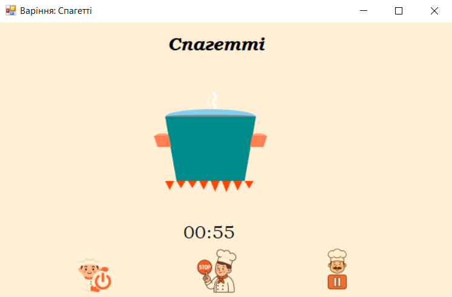

Головне вікно застосунку, де ви обираєте категорію продуктів!



Головне вікно застосунку, де ви обираєте категорію продуктів!
Choose soft, medium or hard boiled eggs.
Recommended cooking times for different rice types.
Perfect timing for spaghetti and noodles.